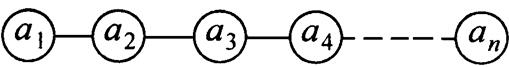
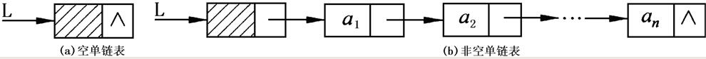
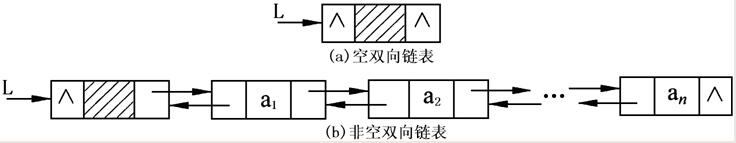

Index
第二章目录
线性表(linear list，简称list)
定义
- 是n(n≥0)个相同类型的数据元素构成的有限序列。
数学表示
图示

注意事项
抽象数据类型ADT
| ADT List
{
Data:
Operation:
InitList(&L)
CreateList(&L)
ListEmpty(L)
ListLength(L)
LocateElem(L,e)
PriorElem(L,cur_e,&pre_e)
NextElem(L,cur_e,&pre_e)
ListInsert(&L,i,e)
ListDelete(&L,i,&e)
GetElem(L,i,&e)
ListTraverse(L)
DestroyList(&L)
}//ADT List
|
顺序表
定义
逻辑图示

数学表示
-
同线性表
-
求址
- 每个元素占用k个存储单元，则
LOC(ai)= LOC(a1)+(i-1)*k (1≤i ≤n)
LOC(ai+1)= LOC(ai)+k (1≤i ≤n)
注意事项
- 访问顺序表中任意元素的时间都相等，具有这一特点的存储结构称为随机存取结构。
顺序表静态存储数据结构
| [in SqList.h]
# define LIST_INIT_SIZE 100 //(默认)最大存储容量
typedef struct {
ElemType elem [LIST_INIT_SIZE]; //存储数据元素的一维数组
int length; //线性表的当前长度
} SqList;
|
顺序表动态存储数据结构
| [in SqList.h]
# define LISTINCREMENT 10 //(默认)增补空间量
typedef struct {
ElemType *elem; // 存储数据元素的一维数组
int length; // 线性表的当前长度
int listsize; // 当前分配的数组容量（以ElemType为单位）
int incrementsize; // 增补空间量（以ElemType为单位）
} SqList;
|
顺序表初始化操作
| [in SqList.h]
void InitList_Sq( SqList &L, int maxsize=LIST_INIT_SIZE, int incresize=LISTINCREMENT ) // 构造一个最大容量为maxsize的顺序表 L
{
L.elem=(ElemType *)malloc(maxsize*sizeof(ElemType)); // 分配一个最大容量为maxsize的数组空间
if(!L.elem) exit(1); // 存储分配失败
L.length=0; // 顺序表中当前所含元素个数为 0
L.listsize=maxsize; // 该顺序表可以容纳maxsize个数据元素
L.incrementsize=incresize; // 需要时可扩容incresize个元素空间
}// InitList_Sq
|
顺序表求表长操作
| [in SqList.h]
int ListLength_Sq(SqList L)
{
return L.length;
}// ListLength_Sq
|
判断顺序表是否为空
| [in SqList.h]
bool ListEmpty_Sq(SqList L)
{
if(L.length==0)
return true;
else return false;
}
|
顺序表定位元素(返回与e值相等的元素下标)
| [in SqList.h]
int LocateElem_Sq( SqList L, ElemType e)
{
for(int i=0;i<L. length;i++)
if(L.elem[i]==e) return i; // 找到满足判定的数据元素为第 i 个元素
return -1; // 该线性表中不存在满足判定的数据元素
}//LocateElem_Sq
|
顺序表前插
在顺序表L的第i个元素之前插入新的元素e，若表中当前容量不足，则按预定义的增量扩容
| [in SqList.h]
bool ListInsert_Sq(SqList &L, int i, ElemType e)
{
int j;
if(i<0||i>L.length) return false; // i值不合法
if(L.length>=L.listsize) // 当前存储空间已满，增补空间
{
L.elem=(ElemType *)realloc(L.elem,(L.listsize+L.incrementsize)*sizeof(ElemType));
if(!L.elem) exit(1); // 存储分配失败
L.listsize+=L.incrementsize; // 当前存储容量增加
}
for(j=L.length;j>i;j--) // 被插入元素之后的元素左移
L.elem[j]=L.elem[j-1];
L.elem[i]=e; // 插入元素e
L.length++; // 表长增1
return true;
}// ListInsert_Sq
|
顺序表后插
在顺序表L的第i个元素之后插入新的元素e，若表中当前容量不足，则按预定义的增量扩容
| [in SqList.h]
bool ListInsert_Sq(SqList &L, int i, ElemType e)
{
int j;
if(i<0||i>L.length) return false; // i值不合法
if(L.length>=L.listsize) // 当前存储空间已满，增补空间
{
L.elem=(ElemType *)realloc(L.elem,(L.listsize+L.incrementsize)*sizeof(ElemType));
if(!L.elem) exit(1); // 存储分配失败
L.listsize+=L.incrementsize; // 当前存储容量增加
}
int target=i+1;
for(j=L.length;j>target;j--) // 被插入元素之后的元素左移
L.elem[j]=L.elem[j-1];
L.elem[target]=e; // 插入元素e
L.length++; // 表长增1
return true;
}// ListInsert_Sq
|
顺序表尾插
在顺序表L的最后一个元素之后插入新的元素e，若表中当前容量不足，则按预定义的增量扩容
| [in SqList.h]
bool ListInsert_Sq(SqList &L, int i, ElemType e)
{
int j;
if(i<0||i>L.length) return false; // i值不合法
if(L.length>=L.listsize) // 当前存储空间已满，增补空间
{
L.elem=(ElemType *)realloc(L.elem,(L.listsize+L.incrementsize)*sizeof(ElemType));
if(!L.elem) exit(1); // 存储分配失败
L.listsize+=L.incrementsize; // 当前存储容量增加
}
L.elem[L.length]=e; // 插入元素e
L.length++; // 表长增1
return true;
}// ListInsert_Sq
|
顺序表查插
在递增有序顺序表L中查找插入新的元素e，首先需要找到在哪插
| [in SqList.h]
bool ListInsert_Sq_1(SqList &L, ElemType e)
{
// 若表中当前容量不足，则按预定义的增量扩容
int i,j;
if(L.length>=L.listsize) { // 当前存储空间已满，增补空间
L.elem=(ElemType *)realloc(L.elem,(L.listsize+L.incrementsize)*sizeof(ElemType));
if(!L.elem) exit(1); // 存储分配失败
L.listsize+=L.incrementsize; // 当前存储容量增加
}
for(i=0;i<L.length&&e>L.elem[i];i++); //让下标移动到应该插入的位置之前
for(j=L.length;j>i;j--) // 被插入元素之后的元素左移
L.elem[j]=L.elem[j-1];
L.elem[i]=e; // 插入元素e
L.length++; // 表长增1
return true;
}// ListInsert_Sq
|
顺序表删除元素操作
在顺序表L中删除第i个元素，并用e返回其值
| [in SqList.h]
bool ListDelete_Sq(SqList &L,int i, ElemType &e)
{
int j;
if(i<0||i>L.length) return false; // i值不合法
if(L.length<=0) return false; // 表空无数据元素可删
e=L.elem[i]; // 被删除元素的值赋给e
for(j=i+1;j<=L.length-1;j++) // 被删除元素之后的元素前移
L.elem [j-1]=L.elem [j];
L.length--; // 表长减1
return true;
}// ListDelete_Sq
|
顺序表取元素操作
取出顺序表L中第i个元素，并用e返回其值。
| [in SqList.h]
bool GetElem_Sq(SqList L,int i, ElemType &e)
{ // 取出顺序表L中第i个元素，并用e返回其值。
if(i<0||i>L.length) return false; // i值不合法
if(L.length<=0) return false; // 表空无数据元素可取
e=L.elem[i]; // 被取元素的值赋给e
return true;
}// GetElem_Sq
|
顺序表遍历输出各元素
| [in SqList.h]
void ListTraverse_Sq(SqList L)
{
int i;
for(i=0;i<L.length;i++)
cout<<setw(6)<<L.elem[i];
cout<<endl;
}// ListTraverse_Sq
|
删除顺序表
| [in SqList.h]
void DestroyList_Sq(SqList &L)
{ // 释放顺序表L所占存储空间
free(L.elem);
L.elem=NULL;
L.listsize=0;
L.length=0;
}// DestroyList_Sq
|
顺序表的可视化操作
将这个顺序表(用一个png文件)可视化展示出来,前提是需要安装graphviz并配置系统环境变量
| void visualization(SqList L, char* filename)
{ int temp;
FILE *stream;
if( NULL == (stream = fopen(filename, "w")) )
{
printf("open file error"); exit(0);
}
fprintf(stream, "digraph\n{\nnode [shape = box];\n");
for(int i=0;i<L.length;i++)
if(GetElem_Sq(L,i,temp))
{
fprintf(stream, "box%d [label = \"%d\"];\n",i,temp);
}
fprintf(stream, "}");
fclose(stream);
system("dot -Tpng showsqlist.dot -o showsqlist.png");
system("showsqlist.png");
}
|
顺序表测试
| [in SqListTest.cpp]
typedef int ElemType; // 顺序表中元素类型为int
# include "stdio.h" // 其实没有用
# include "stdlib.h" // 该文件包含malloc()、realloc()和free()等函数
# include "iomanip.h" // 该文件包含标准输入输出流cout和cin及控制符setw()等函数
# include "SqList.h" // 该文件中包含链表数据对象的描述及相关操作
int main()
{
SqList mylist;
int i,j,temp,forLocate,forGet,forInsert,forDelete;
InitList_Sq(mylist, 50, 10);
for(i=0,j=1;i<10;i++,j++)
if(!ListInsert_Sq(mylist,i, 2*j))
{cout<<"错误!"<<endl; return 0;}
cout<<"我创建了一个顺序表，表长为："<<ListLength_Sq(mylist)<<endl;
cout<<endl<<"表中的元素依次为："<<endl;
ListTraverse_Sq(mylist);
cout<<endl<<"***现在执行元素定位操作,请输入需要查找的元素：***"<<endl;
cin>>forLocate;
j=LocateElem_Sq(mylist, forLocate);
if(j!=-1) cout<<"找到了，它是第"<<j+1<<"个元素。"<<endl;
else cout<<"定位失败！"<<endl;
cout<<endl<<"***现在执行取元素操作,您要找第几个元素？请输入：***"<<endl;
cin>>forGet;
if(GetElem_Sq(mylist,forGet-1,temp))
cout<<"第"<<forGet<<"个元素的值是:"<<temp<<endl;
else cout<<"取元素失败！"<<endl;
cout<<endl<<"***现在执行插入操作,您要将什么元素插入顺序表？请输入：***"<<endl;
cin>>forInsert;
cout<<"***插入到第几个位置？***"<<endl;
cin>>temp;
if(!ListInsert_Sq(mylist, temp-1, forInsert))
{cout<<"插入失败!"<<endl; return 0;}
else cout<<"插入成功，插入后的顺序表为："<<endl;
ListTraverse_Sq(mylist);
cout<<endl<<"***现在执行删除操作,您要删除第几个元素？请输入：***"<<endl;
cin>>forDelete;
if(!ListDelete_Sq(mylist,forDelete-1,temp))
{cout<<"删除失败!"<<endl; return 0;}
else cout<<"删除成功，删除后的顺序表为："<<endl;
ListTraverse_Sq(mylist);
// visualization(mylist,"showsqlist.dot");
cout<<endl<<"***现在执行撤销操作***"<<endl;
DestroyList_Sq(mylist);
cout<<"***顺序表已经销毁！***"<<endl;
return 0;
}
|
链表
单链表
定义
逻辑图示(带头结点的单链表)

- 表头指针：存放单链表中第一个结点的地址的指针。【指向a0(带头结点时)或指向a1(不带头结点时)的指针，上图中的L】
- 头结点：带头结点的单链表中L【上图中的a1之前的结点a0】
- 开始结点：，又称首节点，存放单链表的第一个存放元素的结点。【a1】
- 表尾结点：单链表中最后一个结点，表尾结点的指针域指针为空。【an】
数学表示
注意事项
单链表的数据结构
| [in LinkList.h]
typedef struct Node {
ElemType data; //数据域
struct Node *next; //指针域
}LNode,*LinkList; // LinkList为结构体指针类型
|
单链表的初始化
| [in LinkList.h]
void InitList_L(LinkList &L)
{
L=(LNode *)malloc(sizeof(LNode)); // 申请存放一个结点数据所需要的内在空间
if(!L) exit(1); // 存储分配失败
L->next=NULL; // 表头结点的指针域置空
}// InitList_L
|
求单链表的长度
// L为带头结点的链表的头指针，函数返回L所指链表的长度
| [in LinkList.h]
int ListLength_L( LinkList L )
{
LinkList p;
int k=0;
p=L->next; // p指向链表中的第一个结点
while(p)
{ k++; p=p->next; } // k计非空结点数
return k;
}// ListLength_L
|
单链表的定位操作
在L所指的单链表中查找第一个值和e 相等的结点，若存在，则返回其指针；
| [in LinkList.h]
LNode *LocateElem_L( LinkList L,ElemType e)
{
LinkList p;
p=L->next; // p指向链表中的第一个结点
while (p&&p->data!=e ) p=p->next;
return p;
}// LocateElem_L
|
单链表的定位操作
// 在L所指的单链表中查找第一个值和e相等的结点，若存在，则返回元素顺序(返回值+2为真实顺序),否则返回-1
| [in LinkList.h]
int LocateElem_L_2( LinkList L,ElemType e)
{
int i=-1;
LinkList p;
p=L->next; // p指向链表中的第一个结点
while (p&&p->data!=e) {p=p->next;i++;}
return i;
}// LocateElem_L_2
|
单链表插入元素操作
在带有头结点的单链表L中的第i个结点之前插入元素e
```C++
[in LinkList.h]
bool ListInsert_L( LinkList &L, int i, ElemType e)
{
LinkList p,s;
int j;
p=L; j=0;
while(p->next&&jnext; j++; } // 寻找第i-1个结点,并让p指向此结点
if(j!=i-1) return false; // i的位置不合理
if((s=(LNode *)malloc(sizeof(LNode)))==NULL) exit(1); // 存储分配失败
s->data=e;
s->next=p->next; p->next=s; // 插入新结点
return true;
}// ListInsert_L
| 
#### 注意. while(p)和while(p->next)的区别
我们在操作链表的时候通常会用到
|
| **前者是让工作指针p访问完整个链表，循环结束时，p并没有指向最后一个元素an，而是超出了控制范围，后者是让工作指针p访问完除最后一个元素之外的所有元素，循环结束时，p指向最后一个元素an。**
-----------------------------
#### 单链表删除元素操作
```C++
[in LinkList.h]
bool ListDelete_L( LinkList &L, int i, ElemType &e)
{ // 删除带有头结点的单链表L中的第i个结点，并让e返回其值
LinkList p,q;
int j;
p=L; j=0;
while(p->next->next&&j<i-1){ p=p->next; j++; } //寻找第i-1个结点,并让p指向此结点
if(j!=i-1) return false; // i的位置不合理
q=p->next; // q指向其后继
p->next=q->next; // 删除q所指结点
e=q->data; free(q);
return true;
}// ListDelete_L
|
单链表取元素操作
取出单链表L中第i个元素，并用e返回其值
```C++
[in LinkList.h]
bool GetElem_L(LinkList L,int i, ElemType &e)
{ // 取出单链表L中第i个元素，并用e返回其值
LinkList p;
int j;
p=L; j=0;
while(p->next&&jnext; j++; } // 寻找第i个结点,并让p指向此结点
if(j!=i) return false; // i的位置不合理
e=p->data; // 被取元素的值赋给e
return true;
}// GetElem_L
| -----------------------------
#### 创建单链表（尾插）
已知一维数组A[n]中存有线性表的数据元素，利用尾插法创建单链表L
```C++
[in LinkList.h]
void CreateList_L_Rear(LinkList &L,ElemType a[],int n )
{ // 已知一维数组A[n]中存有线性表的数据元素，利用尾插法创建单链表L
LinkList p,q; int i;
L=(LinkList)malloc(sizeof(LNode)); // 创建立头结点
q=L; // q始终指向尾结点，开始时尾结点也是头结点
for(i=0;i<n;i++)
{ p=(LinkList)malloc(sizeof(LNode)); // 创建新结点
p->data=a[i]; // 赋元素值
q->next=p; // 插入在尾结点之后
q=p; // q指向新的表尾
}
q->next=NULL; // 表尾结点next域置空
}// CreateList_L_Rear
|
创建单链表（头插）
已知一维数组A[n]中存有线性表的数据元素，利用头插法创建单链表L
C++
[in LinkList.h]
void CreateList_L_Front(LinkList &L,ElemType a[],int n )
{
LinkList p; int i;
L=(LinkList)malloc(sizeof(LNode)); //创建立头结点
L->next=NULL;
for(i=n-1;i>=0;i--)
{ p=(LinkList)malloc(sizeof(LNode)); //创建新结点
p->data=a[i]; // 赋元素值
p->next=L->next; // 插入在头结点和第一个结点之间
L->next=p;
}
}// CreateList_L_Front
遍历输出单链表各元素数据
```C++
[in LinkList.h]
void ListTraverse_L(LinkList L)
{
LinkList p=L->next;
while(p) //遍历完整个单链表
{ cout<< setw(6)<data;
p=p->next;
}
cout<<endl;
}// ListTraverse_L
| -----------------------------
#### 销毁单链表
```C++
[in LinkList.h]
void DestroyList_L(LinkList &L )
{
LinkList p,p1;
p=L;
while(p) //遍历完整个单链表
{ p1=p;
p=p->next;
free(p1);
}
L=NULL;
}// DestroyList_L
|
单链表的可视化
将这个单链表(用一个png文件)可视化展示出来,前提是需要安装graphviz并配置系统环境变
```C++
[in LinkList.h]
void ListVisualization_L(LinkList L, char filename)
{ int temp=0;
LinkList p=L;
FILE stream;
if( NULL == (stream = fopen(filename, "w")) )
{ printf("open file error"); cout<<"error!"; }
else if(p&&!(p->next))
{
fprintf(stream, " digraph g {\n rankdir=LR;\n node [shape = \"record\" width = 0.5];\nnode0 [label = \" //// | ^\"];\n\n");
}
else if(p&&(p->next))
{ fprintf(stream, "digraph g {\n rankdir=LR;\n node [shape = \"record\" width = 0.5];\nnode0 [label = \" //// | \"];\n\n");
| while(p->next)
{
fprintf(stream,
|
"node%d [label =\" %d| \"]\n node%d:next -> node%d:data;\n\n",temp+1, p->next->data,temp,temp+1);
p=p->next;
temp++;
}
}
fprintf(stream, "\n}");
fclose(stream);
system("dot -Tpng showlinklist.dot -o showlinklist.png");
system("showlinklist.png");
}
```
单链表测试
```C++
[in LinkList.h]
typedef int ElemType;
include "stdlib.h"
include "iostream.h"
include "iomanip.h"
include "LinkList.h"
int main()
{
LinkList mylist;
int i,j,temp,forLocate,forGet,forInsert,forDelete,a[]={6,8,16,2,34,56,7,10,22,45};
InitList_L(mylist);
cout<<"我初始化了一个头结点。"<<endl;
CreateList_L_Front(mylist,a,10);
cout<<"我创建了一个带头结点的单链表，表长为："<<ListLength_L(mylist)<<endl;
cout<<endl<<"表中的元素依次为："<<endl;
ListTraverse_L(mylist);
cout<<endl<<"<====现在执行定位元素操作,您要找的元素值？"<<endl;
cout<<"请输入：";
cin>>forLocate;
j = LocateElem_L_2(mylist,forLocate);
if(j!=-1&&GetElem_L(mylist,1,temp))
cout<<"找到了，它是第"<<j+2<<"个元素（其中，"<<temp<<"是第一个元素）====>"<<endl;
else cout<<"没找到这个元素！"<<endl;
cout<<endl<<"<====现在执行取元素操作,您要找第几个元素？"<<endl;
cout<<"请输入：";
cin>>forGet;
if(GetElem_L(mylist,forGet,temp))
cout<<"第"<<forGet<<"个元素的值是:"<<temp<<"====>"<<endl;
else cout<<"元素不存在！"<<endl;
cout<<endl<<"<====现在执行插入操作,您要将什么元素插入顺序表？"<<endl;
cout<<"请输入：";
cin>>forInsert;
cout<<"插入到第几个位置？"<<endl;
cout<<"请输入：";
cin>>temp;
if(!ListInsert_L(mylist, temp, forInsert))
{cout<<"插入失败!"<<endl; return 0;}
else cout<<">插入成功，插入后的链表为：==>"<<endl;
ListTraverse_L(mylist);
cout<<endl<<"<====现在执行删除操作,您要删除第几个元素？"<<endl;
cout<<"请输入：";
cin>>forDelete;
if(!ListDelete_L(mylist,forDelete,temp))
{cout<<"删除失败!"<<endl; return 0;}
else cout<<"删除成功，删除后的链表为：====>"<<endl;
ListTraverse_L(mylist);
//ListVisualization_L(mylist,"showlinklist.dot");
cout<<endl<<"<====现在执行销毁操作***"<<endl;
DestroyList_L(mylist);
cout<<"销毁成功====>"<<endl;
}
```
双向链表
定义
- 双（向）链表就是每个结点中含有两个指针域的链表，其中一个指针域存放其前趋结点的地址，另一个指针域存放其后继结点的地址。
逻辑图示

- 头结点：双链表中第一个结点(上图中的a1之前的结点a0)
- 表头指针：存放双链表中第一个结点的地址的指针。(指向a0的指针)
- 开始结点：存放双链表的第一个元素的结点。(a1)
- 表尾结点：双链表中最后一个结点，表尾结点的指针域指针为空。(an)
数学表示
-
同线性表
-
寻址
一般用p,q等字母表示操作性指针，可用前驱指针域prior和后继指针域next访问表中任意节点，例如：
p = &a[i]（即a[i] = p->data）
那么
a[i]的上一个元素地址是 p -> prior , 上一个元素值是 p->prior->data
a[i]的下一个元素地址是 p -> next , 下一个元素值是 p->next->data
一般的，有
p->next-prior = p = p->prior->next
注意事项
双链表的数据结构
| [in DuLinkList.h]
typedef struct DuNode {
ElemType data;
struct DuNode *prior; //前驱指针域
struct DuNode *next; //后继指针域
}DuLNode,*DuLinkList;
|
双链表的初始化
| [in DuLinkList.h]
void InitList_Dul(DuLinkList &L)
{
L=(DuLNode *)malloc(sizeof(DuLNode));
if(!L) exit(1);
L->next=NULL; //后继指针置空
L->prior=NULL; //前驱指针置空
}// InitList_Dul
|
求双链表的长度
// DL为带头结点的链表的头指针，函数返回L所指链表的长度
| [in DuLinkList.h]
int ListLength_Dul(DuLinkList L )
{
DuLinkList p;
int k=0;
p=L->next;
while(p) //当p所指向的结点还有值
{ k++; p=p->next; }
return k;
}// ListLength_Dul
|
双链表的定位操作
在dL所指的双链表中查找第一个值和e相等的结点，若存在，则返回其指针；
| [in DuLinkList.h]
int LocateElem_DL(DuLinkList L,ElemType e)
{
DuLinkList p;
int k=0;
p=L->next;
while(p&&e!=p->data)
{k++;p=p->next;}
return p;
}
|
双链表插入元素操作
在带头结点的双向链表DL中第i个结点之前插入元素e
```C++
[in DuLinkList.h]
bool ListInsert_DuL(DuLinkList &L,int i,ElemType e)
{
DuLinkList p,s,q;
int j;
q=L; j=0;
while(q->next&&jnext; j++; } // 寻找第i-1个结点,并让q指向此结点
if(j!=i-1) return false; // i的位置不合理
s=(DuLNode *)malloc(sizeof(DuLNode));
if(!s) exit(1); // 存储分配失败
s->data=e;
if(q->next) // 插入的位置不是表尾
{
p=q->next; // p指向待插入的位置
s->prior=p->prior; // 修改指针
p->prior->next=s;
s->next=p;
p->prior=s;
}
else // 插入的位置是表尾
{
q->next=s;
s->prior=q;
s->next=NULL;
}
return true;
}
| * 注意，这里的语句4不能换到语句1之前，另外还要区分是不是插到末尾。
-----------------------------
#### 双链表删除元素操作
删除带有头结点的双向链表DL中的第i个结点，并让e返回其值

```C++
[in DuLinkList.h]
bool ListDelete_Du(DuLinkList &L, int i, ElemType &e)
{ int j = 0;
DuLinkList p=L;
while(p->next&&j<i){ p=p->next; j++; } // 寻找第i个结点,并让p指向此结点
if(j!=i) return false; // i的位置不合理
if(p->next) // 待删除的不是表尾结点
p->next->prior=p->prior; // 结点p的前驱作为结点p的后继的前驱
p->prior->next=p->next; // 结点p的后继作为结点p的前驱的后继
e=p->data;
free(p);
return true;
}
|
双链表取元素操作
取出双链表DL中第i个元素，并用e返回其值
```C++
[in DuLinkList.h]
bool GetElem_DL(DuLinkList L,int i, ElemType &e)
{
DuLinkList p;
int j;
p=L; j=0;
while(p->next&&jnext; j++; }
// 寻找第i个结点,并让p指向此结点
if(j!=i) return false; // i的位置不合理
e=p->data; // 被取元素的值赋给e
return true;
}
| -----------------------------
### 循环链表
#### 定义
* 即约瑟夫环，是另一种形式的链式存储结构，它的基本思想是利用结点的空指针域，在链尾和链头之间增加链接，形成环状数据结构。
* 一般有两种形式的循环链表，即单向循环链表和双向循环链表。
* 单向循环链表中，表尾结点的指针域不为空，回指第一个结点，整个链表形成一个环。
* 在双向循环链表中，除了表尾结点的后继指针域回指第一个结点外，同时表头结点的前驱指针域回指表尾结点，这样在链表中构成了两个环。
#### 逻辑图示


-----------------------------
#### 注意事项
* 在初始化操作中，分别将语句L->next = NULL;L- prior = NULL 改成: L->next = L; L->prior = L;
* 在其他操作中，循环控制条件不是判断p,p->next或p->next->next是否为空，二十判断他们是否等于头指针
* 工作指针p的初值应该与循环控制条件相对应，也就是说，若赋值语句为"p=L"，则循环控制表达式为"p->next!=L"，若赋值语句为"p=L->next;";则循环控制表达式为"p!=L"。
#### 双向循环链表的数据结构
-----------------------------
#### 双向循环链表初始化
初始化双向循环链表DL
|
L=(DuLNode *)malloc(sizeof(DuLNode)); // 申请存放一个结点数据所需要的内在空间
if(!L) exit(1); // 存储分配失败
L->next=L; // 表头结点作为表头结点的后继
L->prior=L; // 表头结点作为表头结点的前驱
}
| -----------------------------
#### 双向循环链表的插入元素操作
在带头结点的双向链表DL中第i个结点之前插入元素e
```C++
[in DuLinkList_C.h]
bool ListInsert_DuL_C(DuLinkList &L,int i,ElemType e)
{
DuLinkList p,s;
int j;
p = L->next;j=1
while(p!= L&&j<1) { p = p->next; j++; } // 寻找第i-1个结点,并让p指向此结点
if(j!=i) return false; // i的位置不合理
s=(DuLNode *)malloc(sizeof(DuLNode));
if(!s) exit(1); // 存储分配失败
s->data=e;
s->prior=p->prior; // 修改指针
p->prior->next=s;
s->next=p;
p->prior=s;
return true;
}
|
双向循环链表的删除元素操作
删除带有头结点的双向链表DL中的第i个结点，并让e返回其值
C++
[in DuLinkList_C.h]
bool ListDelete_DuL_C(DuLinkList &L, int i, ElemType &e)
{ DuLinkList p;
int j;
p->L->next;j=1
while(p->next!=L&&j<i){ p=p->next; j++; } // 寻找第i个结点,并让p指向此结点
if(j!=i) return false; // i的位置不合理
e = p->data;
p->prior->next = p->next;
p->next->prior = p->prior;
free(p);
return true;
}